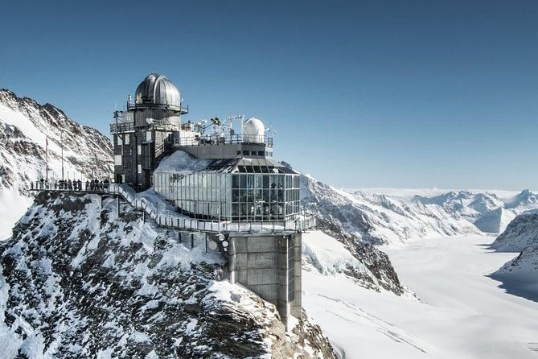

Switzerland is located at the central Europe; Bern is its capital, and the official languages are French, German, Italian, and Romansh. It is a country with towering mountains, deep Alpine lakes, grassy valleys with farms and small villages. Switzerland was formed in 1291 by an alliance of cantons against the Habsburg dynasty – the Confederation Helvetica from which the abbreviation of Switzerland derives – though only in 1848, when a new constitution was adopted was the present nation formed. A developed country, it has the highest nominal wealth per adult and the eight-highest per capita gross domestic product and has been considered a tax haven. It ranks highly on some international metrics, including economic competitiveness and human development.
How to Get There
From Philippines: you must apply for a Switzerland Schengen Visa before going to Switzerland. It’s up to you if you want a direct flight or a connected flight. The flight from Manila to Switzerland is usually 13 hours or more if you would take connected flight. If you’re going to arrive from Zurich Airport, you could take a taxi, train, car rental or by a shuttle bus to go to your hotel and the places you want to visit.
Other Places to Visit in Switzerland

Jungfraujoch
The Matterhorn - One of the highest mountains in Alps. At the foot of this mountain, there is a village named Zermatt, it a top international resort with horse-drawn carriage rides, world-class restaurants, and hotels.
Jungfraujoch: The Top of Europe - Popular thing to do is the train journey to Jungfraujoch, the Top of Europe. It has an observation terrace and scientific observatory. Other popular walks include Panorama Way to the sunny, south-facing slope, the Gletscherschlucht and Opfelchuechliwag, the high-altitude trailfrom Holenstein to Brandegg. Those who don’t want to walk can ride gondolas and cable cars.
Interlaken - One of Switzerland’s popular holiday resort. Hohematte is a marvel of urban planning with 35 acres of open space. Flower gardens, hotels, and cafes surrounds Hoheweg, the main boulevard through here with breathtaking view of the mountains. And because of it adventures like hiking, climbing, abseiling, and kayaking are popular.
Bern - This is Swiss’ capital that exudes old charm that is named as UNESCO Worl Heritage Site. You can stroll the city and have a beautiful view from its towers; the Zytglogge, the Rose Garden, shopping arcades, Zentrum Paul Klee, and Bern Museum of Art are some of the places you could visit.
Zurich - Switzerland’s largest city, major transportation hub, and top starting point for travelers. You could explore different places like Kunsthaus Zurich which is a museum, Zurich Zoo, and Uetliberg Mountain.
Swiss National Park - It is founded in 1914 in the Engadine Valley and is the oldest reserve in the Alps. The park has more than 170 square kilometers of flower-dotted hollows, fast-flowing rivers, and limestone crags.
The Ruinaulta - Also known as the Swiss Grand Canyon is a deep gorge surrounded by expensive meadows and forested cliffs. The area is a preferred destination for hikers, birdwatchers, and nature lovers.